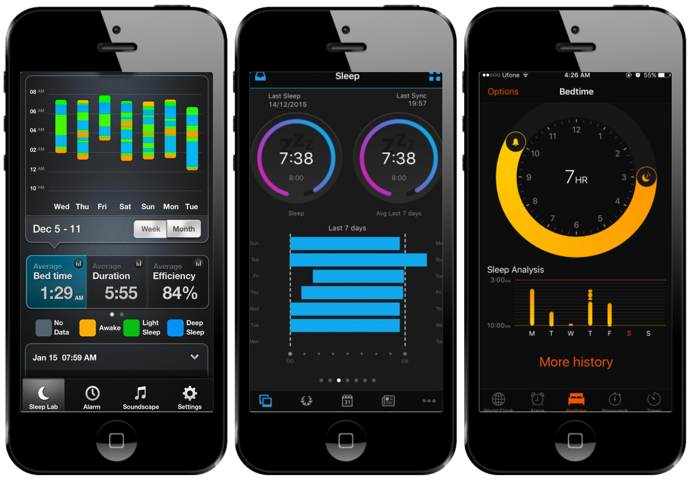
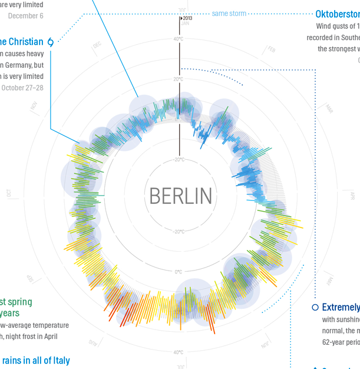

Visualizing Information on Mobile Phones
Recent Experiments, Novel Interactions, & Prospects for the Future
Matthew Brehmer · Microsoft Research · @mattbrehmer
 Presentation at Microsoft Research 2019-03-13
Presentation at Microsoft Research 2019-03-13
Outline
· Context & motivation: Visualization on mobile devices
· Experimental research #1: Ranges over time
· Experimental research #2: Animation vs. small multiples
· Interaction research: Tilting, brushing, & dialing
· Prospects for the future
Scope of My Visualization Research
Considerations & tools for expressive information design:
· Timeline Storyteller - C+J 19 | DataToon - CHI 19 | Charticulator - TVCG 19 | ChartAccent - PVIS 17 | Timelines Revisited - TVCG 17 | TimeLineCurator - TVCG 16
Visualizing information on mobile devices:
· Ranges Over Time - TVCG 19 | Animation vs. Small Multiples - working paper | Novel Interactions with Time-Varying Data - in preparation
Evaluating visualization (tools):
· Data-Driven Stories - DDS 18 | Visualization Authoring Systems - BELIV 18 | Variants of Multi-Series Bar Charts - CHI 18 |
· Overview: A Document Mining Tool for Journalists - TVCG 14 | Pre-Design Empiricism for Visualization - BELIV 14
Visualization task analysis:
· A Typology of Abstract Visualization Tasks - TVCG 13 | Visualizing Dimensionally-Reduced Data - BELIV 14
Visualizing resource consumption:
· Workflows for Energy Portfolio Analysis - TVCG 16
Scope of My Visualization Research
Considerations & tools for expressive information design:
· Timeline Storyteller - C+J 19 | DataToon - CHI 19 | Charticulator - TVCG 19 | ChartAccent - PVIS 17 | Timelines Revisited - TVCG 17 | TimeLineCurator - TVCG 16
Visualizing information on mobile devices:
· Ranges Over Time - TVCG 19 | Animation vs. Small Multiples - working paper | Novel Interactions with Time-Varying Data - in preparation
Evaluating visualization (tools):
· Data-Driven Stories - DDS 18 | Visualization Authoring Systems - BELIV 18 | Variants of Multi-Series Bar Charts - CHI 18 |
· Overview: A Document Mining Tool for Journalists - TVCG 14 | Pre-Design Empiricism for Visualization - BELIV 14
Visualization task analysis:
· A Typology of Abstract Visualization Tasks - TVCG 13 | Visualizing Dimensionally-Reduced Data - BELIV 14
Visualizing resource consumption:
· Workflows for Energy Portfolio Analysis - TVCG 16
Scope of My Visualization Research
Considerations & tools for expressive information design:
· Timeline Storyteller - C+J 19 | DataToon - CHI 19 | Charticulator - TVCG 19 | ChartAccent - PVIS 17 | Timelines Revisited - TVCG 17 | TimeLineCurator - TVCG 16
Visualizing information on mobile devices:
· Ranges Over Time - TVCG 19 | Animation vs. Small Multiples - working paper | Novel Interactions with Time-Varying Data - in preparation
Evaluating visualization (tools):
· Data-Driven Stories - DDS 18 | Visualization Authoring Systems - BELIV 18 | Variants of Multi-Series Bar Charts - CHI 18 |
· Overview: A Document Mining Tool for Journalists - TVCG 14 | Pre-Design Empiricism for Visualization - BELIV 14
Visualization task analysis:
· A Typology of Abstract Visualization Tasks - TVCG 13 | Visualizing Dimensionally-Reduced Data - BELIV 14
Visualizing resource consumption:
· Workflows for Energy Portfolio Analysis - TVCG 16
Visualization on Mobile Devices
The Practice of Visualizing Data on Mobile Devices
Visualization is increasingly prevalent in mobile apps, mobile-first news sites*.
 mobilev.is (Irene Ros) |
mobileinfovis.com (Sebastian Sadowski)
mobilev.is (Irene Ros) |
mobileinfovis.com (Sebastian Sadowski)*In 2017, 45% of Americans regularly consume news from a mobile device (Pew Research Center)
Seattle Times traffic in mid-2017: 42% Mobile, 11% Tablet, 47% Desktop (Thomas Wilburn)
The Practice of Visualizing Data on Mobile Devices
Data Visualization and the News. Gregor Aisch (NY Times) @ Information+ Conf. 2016
vimeo.com/182590214
Research on Visualizing Data for Mobile Devices
There is scant previous work involving mobile devices in the visualization research literature.
 Data Visualization on Mobile Devices. CHI 2018 Workshop organized by
Data Visualization on Mobile Devices. CHI 2018 Workshop organized by Lee, Brehmer, Choe, Isenberg, Langer, and Dachselt.
mobilevis.github.io
"Is Timeline Storyteller Mobile-Friendly?"
Timeline Storyteller: The Design & Deployment of an Interactive Authoring Tool for
Expressive Timeline Narratives.
Brehmer, Lee, Henry Riche, Tittsworth, Lytvynets, Edge, and White. In Proc. Comp. + Journalism 2019.
 timelinestoryteller.com | github.com/Microsoft/timelinestoryteller
timelinestoryteller.com | github.com/Microsoft/timelinestoryteller
Which Design Choices are Suitable for Mobile?
Timelines Revisited: A Design Space and Considerations for Expressive Storytelling.
Brehmer, Lee, Bach, Henry Riche, and Munzner. In IEEE TVCG 2017.
Representation


Scale


Layout


Outline
· Context & motivation: Visualization on mobile devices
· Experimental research #1: Ranges over time
· Experimental research #2: Animation vs. small multiples
· Interaction research: Tilting, brushing, & dialing
· Prospects for the future
Experiment 1: Ranges Over Time
Visualizing Ranges over Time on Mobile Phones: A Task-Based Crowdsourced Evaluation.
Brehmer, Lee, Isenberg, and Choe. In IEEE TVCG 2019 (Proc. InfoVis 2018).

aka.ms/ranges-tvcg
 Image: Eric Boam's 7 Months of Sleep.
Image: Eric Boam's 7 Months of Sleep.
Ranges in Weather Apps
 Apps: Dark Sky © · Weathertron © · Weather Line ©.
Apps: Dark Sky © · Weathertron © · Weather Line ©.
Ranges in Sleep Tracking Apps
 Apps: Azumio Sleep Time © · Garmin Connect © · Bedtime (iOS Clock) ©.Ranges and Radial Representations
 Image: Weather Radials (by Timm Kekeritz) ©.A Crowdsourced Experiment on Mobile Phones
The first crowdsourced visualization evaluation study performed exclusively on phones. Image: newkemall (flickr, cc by).

Thinking Systematically About Tasks
Tasks derived from A Multi-Level Typology of Abstract Visualization Tasks.
Brehmer and Munzner. In IEEE TVCG (InfoVis 2013):
· Locate Dates
· Identify Values
· Locate Extreme Values
· Compare Values
· Compare Ranges
Dependent Measures
For each trial:
Trial completion time
Response accuracy
At each level of granularity:
Preference: Linear or Radial
Confidence: Low to High
Participants
Temperature (N = 40), Sleep (N = 47)
84 trials per participant, using their own phone.
Radial or Linear?
Detailed statistics are provided in:
Visualizing Ranges over Time on Mobile Phones: A Task-Based Crowdsourced Evaluation.
Brehmer, Lee, Isenberg, and Choe. In IEEE TVCG (InfoVis 2018). aka.ms/ranges-tvcg .
People are, in general, slower with radial representations.
Accuracy appears to be data- and task-dependent:
e.g., less accurate with radial when identifying and locating values in absence of seasonal variation.
People prefer and are more confident with linear representations.
Week vs. Month vs. Year
Detailed statistics are provided in:
Visualizing Ranges over Time on Mobile Phones: A Task-Based Crowdsourced Evaluation.
Brehmer, Lee, Isenberg, and Choe. In IEEE TVCG (InfoVis 2018). aka.ms/ranges-tvcg .
People are typically slower with a month than with a week of ranges.
For some tasks, people were less accurate with a month than with a year.
e.g., seasonal variation in annual temperature appears to be beneficial for locating extreme values.

Ranges Over Time on Mobile Phones: Conclusions
Is a cycle meaningful in the context of the data?
Does the task involve locating values? Or comparing them?
Is efficiency important?
Locating values quickly? → Choose Linear.
Comparing values (and unconcerned with speed)? → Choose Radial or Linear.
aka.ms/ranges | (mobile only) experimental app.
github.com/Microsoft/RangesOnMobile | open source app and analysis.
medium.com/multiple-views-visualization-research-explained | blog post for practitioners.
Outline
· Context & motivation: Visualization on mobile devices
· Experimental research #1: Ranges over time
· Experimental research #2: Animation vs. small multiples
· Interaction research: Tilting, brushing, & dialing
· Prospects for the future
Experiment 2: Animation vs. Small Multiples
A Comparative Evaluation of Animation & Small Multiples For Trend Visualization on Mobile Phones.
Brehmer, Lee, Isenberg, and Choe. Working paper. (InfoVis 2019 Submission)

 aka.ms/multiples | (mobile only) experimental app.
aka.ms/multiples | (mobile only) experimental app.
Outline
· Context & motivation: Visualization on mobile devices
· Experimental research #1: Ranges over time
· Experimental research #2: Animation vs. small multiples
· Interaction research: Tilting, brushing, & dialing
· Prospects for the future
Interaction research: "Mo'Bubble"
Tilting, Brushing, & Dialing Interactions for Data Visualization on Mobile Phones.
Brehmer, Lee, Collins, and Hinckley. Work in progress, 2019.

Y-axis tilting in portrait or landscape; X-axis tilting for list navigation. aka.ms/mobubble | (mobile only) demonstration app.
Interaction research: "Mo'Bubble"
Tilting, Brushing, & Dialing Interactions for Data Visualization on Mobile Phones.
Brehmer, Lee, Collins, and Hinckley. Work in progress, 2019.

Mo'Bubble Satya Demo at TechFest 2019
TechFest 2019 exhibit by Pahud, Hinckley, Brehmer, Holz, Henry Riche, and Buxton.

Photo credit: Nathalie Henry Riche
Outline
· Context & motivation: Visualization on mobile devices
· Experimental research #1: Ranges over time
· Experimental research #2: Animation vs. small multiples
· Interaction research: Tilting, brushing, & dialing
· Prospects for the future
Expressive Info. Design for Mobile Devices: Planned
Smaller Multiples: Assessing Multidimensional Glyph Design on Mobile Phones.
Brehmer, Lee, Isenberg, and Choe.
 Images CW from top left: StressScan, Clue, FitBit Surge, Activity, Sleep++, Daily Goals.
Images CW from top left: StressScan, Clue, FitBit Surge, Activity, Sleep++, Daily Goals.
Visualizing Information on Mobile Phones
Recent Experiments, Novel Interactions, & Prospects for the Future
Matthew Brehmer · Microsoft Research · @mattbrehmer
Presentation at Microsoft Research 2019-03-13
Supplemental
Ranges Over Time on Mobile Phones
Detailed Experimental Design and Results Slides